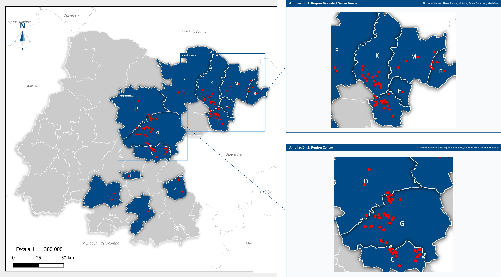

Estado de Guanajuato
Distribución territorial de las 107 comunidades indígenas en 13 municipios
Panorama Sociodemográfico de los
Pueblos y Comunidades Indígenas y Afromexicanas
del Estado de Guanajuato

Distribución territorial de las 107 comunidades indígenas en 13 municipios
